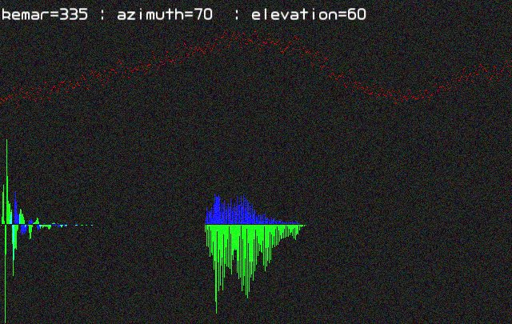

20070709 - 3D Audio and KEMAR Data
3D audio is a weird science.
Basically the body (and shape of the ear) itself filters the sound which reaches each ear differently based on the direction of the incoming sound.
This is how we can tell what direction a sound is coming from.
And of course, all of our bodies are different, so we each hear differently, and thus there is no perfect solution to 3D audio.
While elevation cues are greatly effected by ear shape, azimuth (left to right) and distance cues are similar between most people.
Ultimately writing a system for 3D Audio requires data of exactly how the left and right ears filter sound based on direction.
Luckily Bill Gardner and Keith Martin from MIT have publicly provided such data using a KEMAR dummy head.
Interpreting the KEMAR Data
Their Compact HRTF measurements tarball provides the data in a ready to use format,
368 directional stereo recordings (each 128 samples in length) of the corrected impulse response captured from mics in the KEMAR ears.
Simply run your FFT on the impulse samples and you have the frequency response (or filtering each ear does) based on the 368 directions sampled in the data.

This is a screen shot of a simple program I wrote to checkout the data, which enables the user to select a azimuth and elevation,
and then filters input from the audio in jack and plays out the directional audio.
The impulse sample (time domain) for the left and right ears (green and blue) is shown on the lower left.
While the FFT results (frequency domain) is shown on the right.